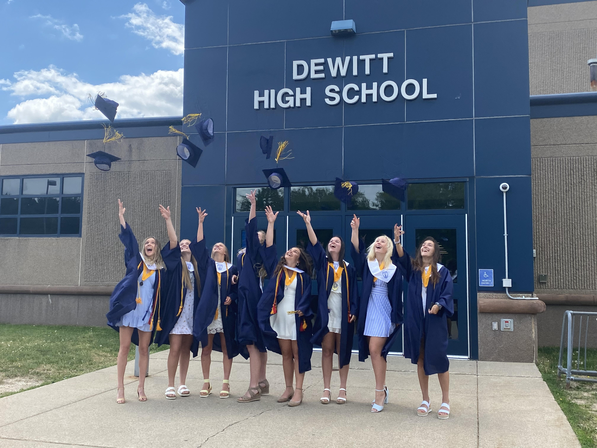
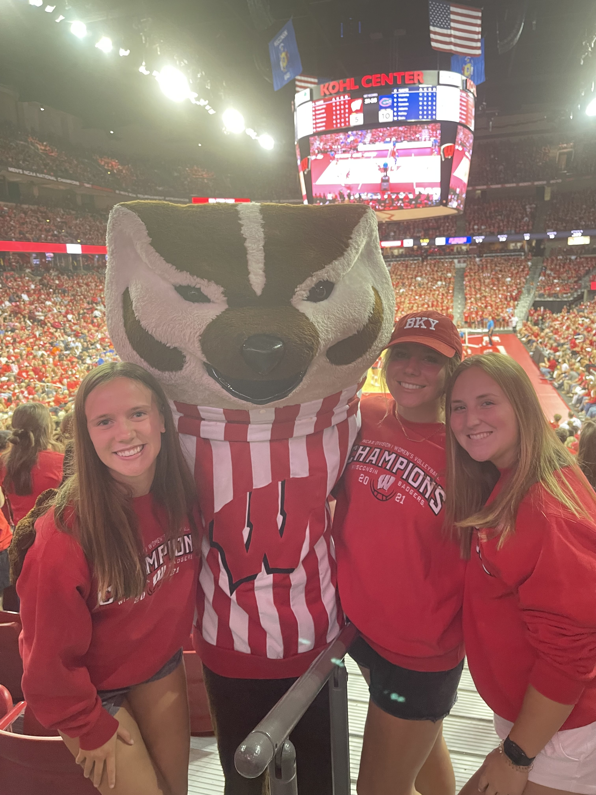

 My Name is Abby Vitou. I am originally from a small town called DeWitt, Michigan which is right outside of Lansing, Michigan, our state capitol. Growing up as a Michigander, I loved to be outside and discover new and fun activities to do with my friends and my family. Some of my facorite outdoor activites include running and snowboarding, but you can also find me going for bike rides, kayaking, and hiking new trails. Growing up, my parents always encouraged my sister and I to live healthy lifestyles. Having this expectation from my parents, led me to competitively dance for almost 13 years in a variety of styles, some of my favorites being ballet, lyrical, and tap. After dancing for so many years, I decided to try something new and follow in my sister and dad's footsteps by running cross country and track and field in high shcool. On top of staying physically active, I also adopted a vegetarian diet my Junior year of high school after learning about the health and environmental benefits in my AP Environmental Science Class.
When the weather gets colder in Michigan, and it's not so fun to run outside, I'm probably driving three hours North to go snowboarding and skiing with my friends and family, especially over the holidays. Skiing and Snowboarding are both reasons why winter is my favorite season. I haven't been able to snowboard since coming to college with all of the assignment deadlines, projects, exams, and extraciricular activites that fill up my schedule, but I'm really going to try to make an effort to explore the Wisconsin slopes this upcoming Winter.
 When it came to choosing a college, I knew that UW-Madison was the place for me after going on a tour my Junior year of high school and learning more about the business school. This university has truly blown my expectations away and I am truly proud to be a badger. For the next three semesters, I'm working towards earning my BBA in Information Systems while also completing a minor in Data Science. I have always had a passion for technology and actually used to compete in Excel Spreasheet national competitions in high school. I'm working towards a career in either Technology Consulting or Solutions Architecture but I'm always hungry to learn more. At UW-Madison I've become an active member in the Information Systems Society, the Ethical and Responsible Business Network, and I've also taken on the leadership role of VP of Internal Member Relations for the organization Women in Business Technology. I love meeting like-minded badgers and hearing about a variety of careers in Sustainability, Technology, and Business in general. When I'm not busy doing all of that, I'm usually working remotely for a Threat Intelligence Analyst team for a company I worked for back home this past summer.